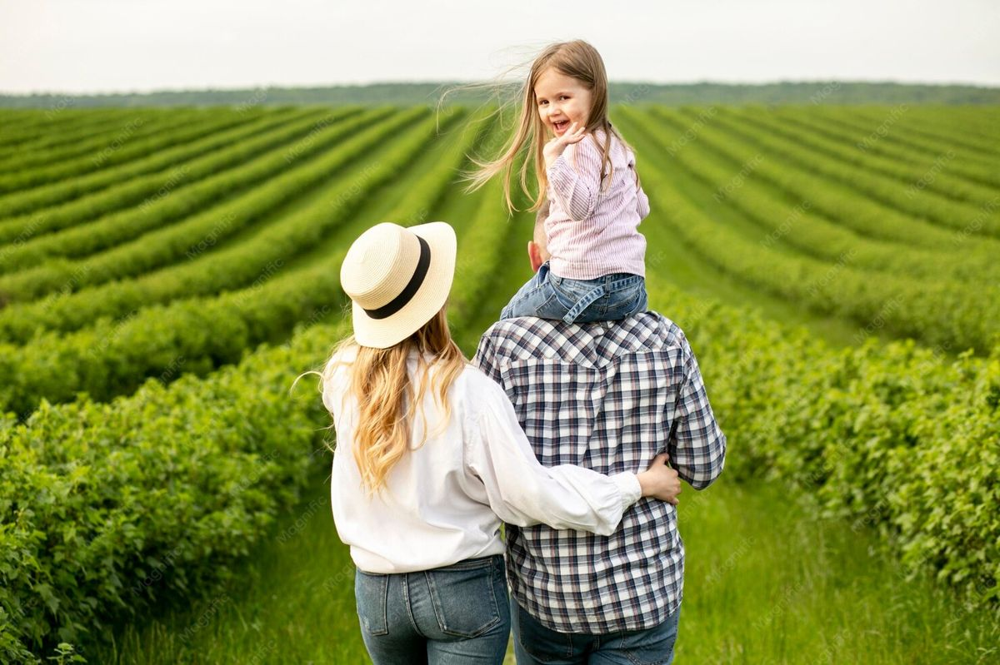
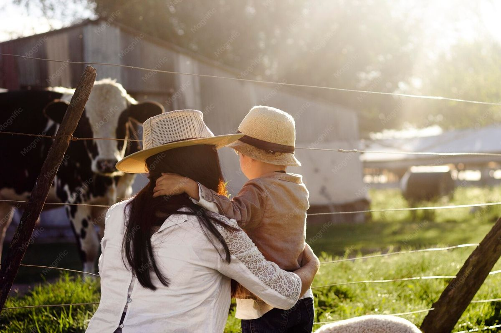
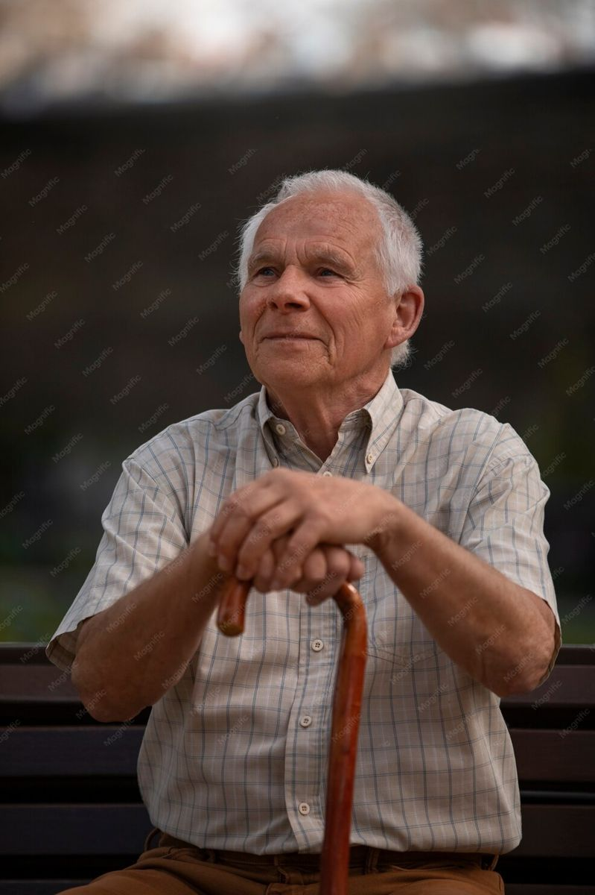

Uma jornada para entender, ofertar e operacionalizar o seguro que protege o associado, a família e a cooperativa.
Começar a jornada
Prepare-se para uma jornada de aprendizado muito importante. Aqui, vamos desvendar todos os detalhes do produto Tranquilidade Financeira: uma opção que faz a diferença real na vida das pessoas.
Pegue seu café, acomode-se na cadeira e vamos juntos!
Clique nas abas para ver mais informações.
Nosso treinamento está organizado em sete módulos:
Este curso terá a duração de, aproximadamente, 30 minutos.
Ao longo dos módulos, você poderá testar seus conhecimentos com algumas atividades! Fique atento(a) e dê o seu melhor!
Vamos começar? Então, clique sobre o “Módulo 1”!
Vamos responder a essa e outras perguntas neste módulo! Clique em continuar para explorar o conteúdo.
Que tal iniciarmos definindo esse importante produto do nosso portfólio? Acompanhe a seguir a explicação:
Como bem sabemos, a contratação de um crédito costuma marcar um momento importante na vida do nosso associado: a realização de um sonho, a compra de um veículo ou de um imóvel, ou até mesmo o apoio financeiro em uma situação de necessidade. E é justamente por isso que proteger essa operação faz toda a diferença.
Imagine que a vida é cheia de imprevistos, e um dos mais difíceis de lidar é o falecimento. Em um momento delicado como esse, o seguro entra em ação para quitar ou reduzir a dívida que o associado tinha em aberto.
Toque em cada lado para descobrir.
A família não precisa usar o patrimônio deixado para arcar com a dívida.
Com o “Tranquilidade Financeira”, a família não precisa utilizar o patrimônio deixado para arcar com essa obrigação financeira. Afinal, de acordo com o Código Civil (art. 796), as dívidas do falecido podem ser quitadas com os bens da herança, reduzindo o patrimônio destinado aos herdeiros.
Dessa forma, esse impacto pode ser evitado. O seguro protege o patrimônio da família, oferece mais tranquilidade em um momento delicado e garante mais segurança para todos os envolvidos.
Menos risco nas operações de crédito e uma cooperativa mais forte.
Ao reduzir os riscos das operações de crédito, ele também fortalece a saúde financeira da cooperativa e contribui para resultados mais sustentáveis.
Isso ajuda a manter a estrutura funcionando, fortalece programas de reconhecimento como o PPR e permite que o Sicredi continue investindo no relacionamento com seus associados.
Pense na seguinte situação:
Como o Tranquilidade Financeira ajuda nesse momento?
Neste segundo módulo, falaremos sobre os motivos pelos quais a nossa parceria Sicredi - Mapfre faz tanto sentido! Clique em Continuar para aprofundar seu entendimento!
A parceria entre Sicredi e Mapfre fortalece o Seguro Tranquilidade Financeira ao combinar uma seguradora sólida, processos mais simples e uma operação preparada para crescer.
Pense na seguinte situação. Imagine que um associado pergunta:
Com base no que você aprendeu, qual resposta faz mais sentido?
Até aqui, entendemos o que é o Tranquilidade Financeira e por que ele é tão importante para o associado e para a cooperativa. Agora, chegou a hora de responder a uma pergunta muito comum: “Mas, na prática, qual é o impacto desse seguro na vida das pessoas?”
Neste módulo, vamos analisar situações que mostram exatamente como o Seguro Prestamista protege o patrimônio da família e quais regras devemos observar na contratação.
Compare os dois cenários: sem o seguro e com o seguro. Você também pode mover os controles para testar outros valores.

Com o seguroÉ exatamente isso que significa proteger o patrimônio da família.
Existe um ponto muito importante que merece atenção.
O Seguro Tranquilidade Financeira existe justamente para evitar essa situação, protegendo o patrimônio construído pelo associado e oferecendo mais tranquilidade financeira para quem fica. Junto disso, ele garante proteção imediata às operações de crédito do Sicredi, assegurando a amortização total ou parcial da dívida contratada em caso de imprevistos cobertos.
O Tranquilidade Financeira foi desenvolvido para atender às necessidades dos nossos associados. Dessa forma, ele contempla a contratação de Pessoa Física e Pessoa Jurídica, com idade entre 14 e 80 anos.
Após a contratação e aceitação pela seguradora, o seguro entra em vigência. Sem carência, nem franquia!
Mas existe uma regra muito importante! O limite não considera apenas a idade atual do associado. Acompanhe isso na prática, a partir dos exemplos a seguir:

A regra que você precisa guardar é muito simples:
Imagine dois associados que possuem exatamente o mesmo patrimônio e a mesma dívida. Um deles contratou o Tranquilidade Financeira e o outro não.
Clique no botão com a alternativa correta!
Quem contrata o seguro Tranquilidade Financeira consegue proteger o patrimônio da família ao quitar ou amortizar a dívida da operação de crédito, conforme as coberturas previstas. Dessa forma, o seguro não aumenta o valor da herança, nem reduz o valor das parcelas da operação de crédito.
Agora que entendemos como o Tranquilidade Financeira protege o patrimônio dos nossos associados, vamos conhecer algumas regras importantes para a contratação.
Pode ficar tranquilo(a): apesar de parecer um assunto mais técnico, os conceitos são bastante simples. Vamos lá! Clique em “Continuar” para compreender tudo sobre esse assunto.
Sempre que contratamos um seguro, existe um limite máximo de cobertura. É isso que chamamos de capital segurado. No Tranquilidade Financeira, esse limite varia de acordo com a idade do segurado.
Esses limites permitem atender desde operações menores até operações de crédito de maior valor, sempre respeitando as regras do produto.
Vamos entender a diferença entre elas agora!
Mas existe um detalhe importante.
Quando a contratação acontece para uma Pessoa Jurídica, existe uma regra específica:
Um associado deseja contratar o Tranquilidade Financeira e pergunta qual é a diferença entre as modalidades Capital Fixo e Capital Vinculado.
Quando falamos em contratação de seguros, um assunto costuma gerar dúvidas: a Declaração Pessoal de Saúde, ou simplesmente DPS. Mas pode ficar tranquilo. No Tranquilidade Financeira, as regras são objetivas e o processo é muito mais simples do que parece.
A Declaração Pessoal de Saúde é um documento utilizado em algumas contratações para que a seguradora possa avaliar o risco da operação.
Mas atenção: nem toda contratação exige o preenchimento da DPS. Vamos entender essas regras que estipulam quando a DPS é necessária:
Em resumo, basta estar atento a esses dois critérios (idade e capital segurado) para saber se será necessário preencher a declaração. Teste você mesmo:
Se você imaginou um processo cheio de formulários e assinaturas, pode esquecer essa ideia.
As informações são enviadas diretamente para a seguradora por meio de integração via API, tornando o processo mais rápido, seguro e prático para todos.
Nem todos os associados estão acostumados com processos digitais.
Por isso, caso exista alguma dificuldade durante o preenchimento eletrônico, a proposta também poderá ser assinada fisicamente.
O mais importante é garantir que o associado compreenda todo o processo e tenha uma experiência tranquila durante a contratação.
Agora que entendemos a DPS, vamos acompanhar o caminho percorrido pelo associado até a contratação do seguro.
Clique em cada passo para marcá-lo.
Como vimos, dependendo da idade e do capital segurado, poderá ser necessária a Declaração Pessoal de Saúde (DPS). Quando ela não for exigida, a contratação segue normalmente.
É importante deixar claro ao associado que a cobrança do seguro acontece separadamente das parcelas do crédito.
Isso permite que o associado visualize claramente o valor correspondente ao seguro contratado, trazendo mais transparência e facilitando o entendimento da operação.
Em algumas situações, a proposta pode ser recusada pela Mapfre, ou, ainda, pode ser que seja solicitado documentos e informações adicionais.
Durante a contratação de uma operação de crédito, um associado aceita contratar o Tranquilidade Financeira. O capital segurado exige o preenchimento da DPS.
Qual é o próximo passo desse processo?
Até aqui, vimos como acontece a contratação do Tranquilidade Financeira e entendemos quando a DPS é necessária. Agora, vamos acompanhar o que acontece depois que o seguro é contratado.
Uma dúvida bastante comum é sobre o início da vigência do seguro. A regra é simples, veja só:
Existe apenas uma exceção: se o seguro for contratado depois que a operação de crédito já tiver sido liberada, a vigência passa a contar da data da contratação do seguro. Assim, a cobertura sempre acompanha o momento em que a adesão é efetivamente realizada.
Ao contratar o Tranquilidade Financeira, o associado paga um valor correspondente ao seguro. Esse valor é chamado de prêmio. Dependendo da modalidade contratada, esse pagamento pode acontecer de duas formas.
A cobrança do pagamento único e do primeiro pagamento mensal será realizada pelo Sicredi.
As demais cobranças do pagamento mensal serão realizadas pela MAPFRE conforme atualização do saldo devedor pelo Sicredi.
Esse processo garante que a cobrança permaneça alinhada à evolução do financiamento. Mas, e se houver atraso no pagamento? Vamos descobrir o que acontece!
Imprevistos podem acontecer. Por isso, o Certificado Individual oferece um prazo de tolerância para o pagamento dos prêmios mensais. Mesmo em caso de atraso no pagamento do prêmio, a proteção permanece válida por até 60 dias.
Essa regra oferece uma camada extra de segurança ao associado e aos seus beneficiários em situações inesperadas.
Lembra da modalidade Capital Fixo, que vimos no módulo anterior? Existe uma informação importante sobre ela. Acompanhe:
Agora, que tal entender como o prêmio é calculado? Você não precisa decorar a fórmula, mas é importante entender como esse valor é definido.
Fórmula do cálculo do prêmio
(Taxa mensal ÷ 30) × Capital Segurado × Número de dias segurados
Experimente com valores de exemplo:
Cálculo ilustrativo para fins de treinamento.
O associado pode solicitar o cancelamento do seguro Tranquilidade Financeira sempre que desejar. Além disso, existe outra situação em que o cancelamento acontece automaticamente.
Nos dois casos, quando houver valores a serem devolvidos ao associado, essa devolução será realizada conforme as regras do produto, pelo método Pro Rata Temporis. Em outras palavras, a devolução do prêmio considera apenas o período em que o seguro permaneceu vigente.
Outro fator importante é a idade do associado. À medida que a faixa etária aumenta, também aumenta a taxa mensal utilizada no cálculo do prêmio. O manual apresenta uma tabela completa com todas as faixas etárias e respectivas taxas de referência. Vamos conferir esses detalhes na tabela a seguir:
Um associado quitou antecipadamente sua operação de crédito e perguntou o que acontece com o Seguro Tranquilidade Financeira.
Qual alternativa está correta?
Chegamos ao último módulo do nosso curso! Até aqui, entendemos como o produto Tranquilidade Financeira protege o associado, conhecemos as regras de contratação e acompanhamos todo o fluxo da operação. Clique em “Continuar” e vá em frente!
Sabemos que o seguro Tranquilidade Financeira já oferece um benefício muito importante: proteger o associado e sua família diante de imprevistos. Mas existe um diferencial que torna o produto ainda mais atrativo:
Além de toda a proteção oferecida pelo seguro, esse benefício representa mais um diferencial que pode ser apresentado durante a oferta do produto.
Apesar de ninguém desejar passar por esse momento, é importante saber que existe um processo estruturado para garantir o atendimento ao associado e aos seus beneficiários.
Sempre que surgir uma dúvida ou necessidade de suporte, o associado pode entrar em contato pelos canais a seguir. Vamos conhecer cada um deles:
Esses canais podem ser utilizados para esclarecimento de dúvidas e solicitações relacionadas ao seguro.
Assim, todos os associados podem receber suporte de forma adequada às suas necessidades.
Nem sempre o primeiro contato será diretamente com a seguradora. Muitas vezes, o associado procura a própria agência do Sicredi em busca de orientação.
Dessa forma, o associado recebe o suporte adequado sempre que houver necessidade.
Um associado entra em contato com a agência informando que precisa de orientações sobre um possível sinistro relacionado ao Seguro Tranquilidade Financeira.
Qual deve ser a conduta do colaborador?
Antes de concluirmos todo o conteúdo, queremos que você assista ao vídeo a seguir, que resume os principais conceitos aprendidos aqui. Assim, o seu atendimento será completo, beneficiando o associado e toda a rede cooperada!
Em breve ele estará disponível neste espaço. Enquanto isso, veja algumas cenas que farão parte dele.
Você concluiu o curso sobre o Seguro Tranquilidade Financeira.
Ao longo desta jornada, vimos que esse produto vai muito além de acompanhar uma operação de crédito. Ele representa proteção para o associado, segurança para sua família e sustentabilidade para a cooperativa.
Agora você conhece as principais regras de contratação, entende como funciona o processo de venda e operacionalização e sabe orientar o associado em diferentes situações do dia a dia.
Obrigado pela sua participação e até o próximo treinamento!